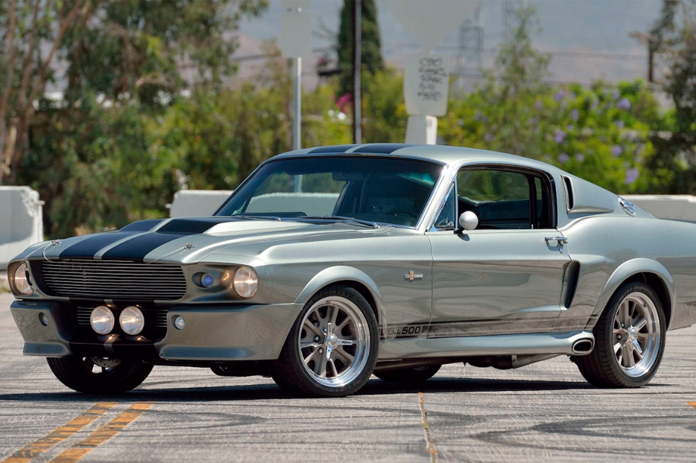
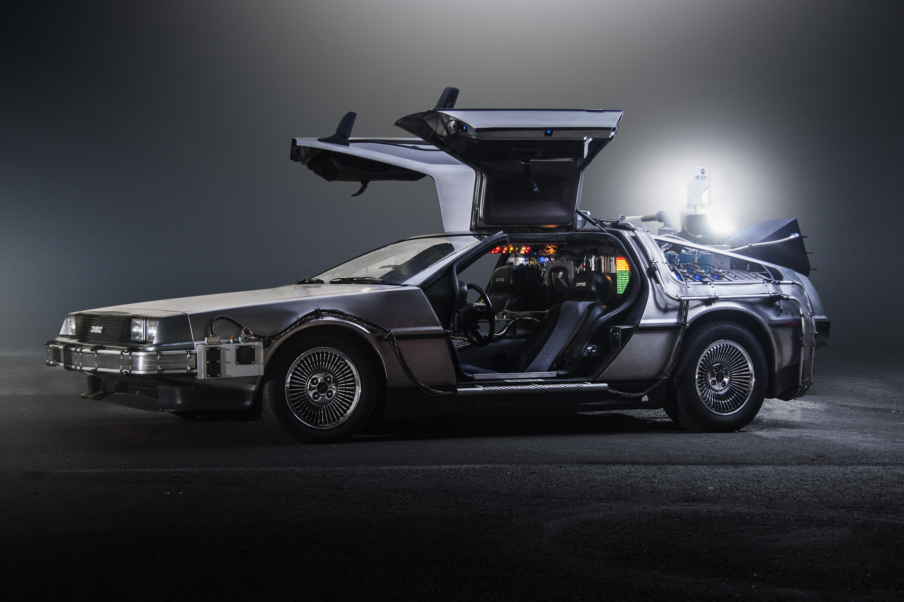

I am a car enthusiast since before I learned to walk, I had a collection of toy trucks and cars that no one at my age would have ever owned. I took the love of cars from my dad as I grew up talking about cars, engines and new car technologies with him all the time everyday. Sometimes I even had car knowledge competitions with my dad, I will not lie, he used to win but not until I got access to internet and started watching car Vlogs all the time. One of my favorite hangouts was to go to car showrooms and take super cars on a test drive with my dad. We always paid attention to the tiniest details in new cars, my dad often paid more attention into luxury and technology while I cared more about horsepower, exhaust sounds and SPEED. I got my license in August 2020, but I am not going to hide this secret from you, I have been driving way before that! When I got my license, I had to take one of the family's cars. My friends called it old, looks like a mom's car, but for me its a beast on 4 wheels! My Car is a Black Nissan Pathfinder SE 2005With a V6 3.5L engine and 285 horsepower. It goes from 0 to 100 KM/H in 8.2 seconds! Quiet astonishing right?! It is very useful when picking up my friends or going on picnics and desert camps, specially for its strong 4x4 capabilities. This car belongs to the SUVs category, its a japanese brand. Nissan company itself said that this is the last successfull Pathfinder produced by them! |
|
| KNIGHT RIDER | |
|---|---|
Picture Reference |
1982 Drama ShowMichael Knight is a man on a mission. Reborn, so to speak, after getting shot in the face, Knight decides to dedicate his life to fighting for justice. Self-made billionaire Wilton Knight hires Michael to be the lead field agent in his Knight Foundation's public justice organization, part of which includes the developoing of KITT (Knight Industries Two Thousand), a superpowered, intelligent souped-up Pontiac Trans-Am. KITT can drive 300 miles an hour, is bulletproof, fireproof, can talk, and helps Michael fight injustices in the world. The Car is a 1982 Pontiac Firebird trans AM owned by David Hasselhoff in the show.It belongs to the type American Muscle. |
| FAST & FURIOUS | |
Picture Reference |
Film Series Started in 2001Fast & Furious is a media franchise centered on a series of action films that are largely concerned with illegal street racing, heists and spies. The franchise also includes short films, a television series, live shows, video games and theme park attractions. It is distributed by Universal Pictures. The first Car is a Nissan GT-R34 owned by Paul Walker in the movie.It belongs to the type JDM. The second Car is a 1970 Dodge Charger R/T owned by Vin Diesel in the movie.It belongs to the type American Muscle. |
Picture Reference | |
| GONE IN 60 SECONDS | |
|  Picture Reference |
2000 Action MovieMemphis Raines, a former prisoner, returns to the crime world to save Kip's life when he learns that his brother faces threat from gangster Raymond Calitri. That car was the signature of the movie and it was sold later for $1.1 Milion! The car is a 1967 For Mustang (Eleanor) owned by Nicolas Cage in the movie.It belongs to the type American Muscle. |
| BACK TO THE FUTURE | |
|  Picture Reference |
1985 Sci-Fiction FilmMarty travels back in time using an eccentric scientist's time machine. However, he must make his high-school-aged parents fall in love in order to return to the present. The car is a 1985 DMC DeLorean that was used as the time machine in the movie.It belongs to the type American Muscle. |
| HERBIE | |
Picture Reference |
1980/2005 Comedy FilmsHerbie was an abnormal car, that could go around by itself, and does whatever it wants. It was like a friend to its owner which made this generation love the VolksWagon Beetles. Herbie: Goes BananasPete inherits Herbie from his uncle and, along with his friends, sets out to Rio de Janerio for a race. Amidst the chaos that ensues on the way, they successfully trap three criminals. Herbie: Over LoadedMaggie, an aspiring racer, discovers Herbie, a Volkswagen Beetle, that is sentient. She and the car then bond together and become a formidable tandem on the race track. The car is a 1963 VolksWagon Beetles (The Love Bug) was owned by Stephan W.Burns in the first partand owned by Lindsay Lohan in the second part.Volkswagon is a German company but the beetles is known for being a classic car. |
| TRANSFORMERS | |
Picture Reference |
Film series started in 2007Transformers is a series of American science fiction action films based on the Transformers franchise which began in the 1980s. Michael Bay has directed the first five films: Transformers, Revenge of the Fallen, Dark of the Moon, Age of Extinction, and The Last Knight. The main idea of the film was around cars and trucks that turn into huge battle robots that fights evil. The car is a Chevrolet Camaro that played the character Bumblebee.It belongs to the type American Muscle. |
| Ford V Ferrari | |
Picture Reference |
2019 Drama/Sport FilmThe Ford GT40 is an American high-performance endurance racing car. The GT40 effort was launched by Ford Motor Company to win long-distance sports car races against Ferrari, which won every 24 Hours of Le Mans race from 1960 to 1965. The GT40 broke Ferrari's streak in 1966 and went on to win the next three annual races. This success was shaped and developed by the Shelby America company. BEING THE FIRST AMERICAN BUILT CAR IN HISTORY TO WIN THE LE MANS. The car is the Ford 427 GT40X - 1965It belongs to the type American Muscle. |